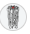

Mattijs Roozeboom
Security /platform / SRE Engineer
IELTS 9/10
Intro
I flourish in an environment where I’m not a permanent member of the team but can still help and support the team. If the only reason to go to the office is to strengthen the team spirit, I’m not the right guy. All I’m looking for is a proper challenge, which we’ll discuss before we start the assignment.
As an engineer with an intrinsic interest in ethical hacking and reverse engineering I aim to find and solve the more esoteric problems, so the team doesn’t have to. The Dev(Sec)Ops way of working is considered standard operating procedure, yet I strive to improve upon that way of working every day. I function best in a technical leading and/or pioneering role within a highly technical context. But I don’t shy away from communicating pragmatically with people from other disciplines or departments.
Summarized: Give me the problem no-one else can solve.
Courses & Certificates
Listing of all courses I've taken
WWHF Offensive Development
Getting taught how to evade about every AV/EDR solution on the planet
Maldevacademy
All courses #add them at some point

Zero Point Security
Red Team Ops I
This course provides you with the knowledge and skills necessary to excel in
performing adversary simulation and emulation exercises with Cobalt Strike.
Red Team Ops II
This course provides you with the knowledge and skills necessary to operate
against modern defenses.
BOF Development & Tradecraft
This course teaches how to write and unit test Beacon Object Files (BOFs) for
use in Cobalt Strike and other C2 frameworks.
UDRL and Sleep mask Development
This course teaches students how to apply low-level Windows knowledge and
offensive tradecraft in the writing and development of Cobalt Strike's
User-Defined Reflective Loader and Sleepmask components.
Sektor 7
Red Team Operator - Malware development Essentials
A course on becoming a better ethical hacker, pentester and red teamer by
learning offensive security tools development in Windows.
Red Team Operator - Malware development Intermediate
More advanced offensive security tools (OST) development techniques in Windows,
including: API hooking, 32-/64-bit migrations, reflective binaries and more.
Red Team Operator - Malware Development Advanced - Vol 1
Advanced offensive security tool (OST) development topics for Windows user land
only, including: hidden data storage, rootkit techniques, finding privileged
objects in system memory, detecting new process creation, generating and
handling exceptions, building COFFs and custom RPC-like instrumentation, and
more.
Red Team Operator - Malware Development Advanced - Vol 2
Advanced offensive security tool (OST) development for Windows kernel,
including: kernel object manipulations, silencing EtW telemetry, obtaining and
preserving READ+WRITE primitives in Windows kernel, and more.
Sektor 7
Red Team Operator - Windows Persistence Course
27 persistence methods in Windows. From basic to advanced, unique and used by
nation-state threat actors.
Red Team Operator - Windows Evasion course
Learn how to avoid modern endpoint protection technology with well known, less
known and in-house developed techniques.
Red Team Operator - Privilege Escalation in Windows
A course about breaking and bypassing Windows security model. Escalating
privileges with 20 different techniques. From non-admin to SYSTEM.
AWS
Amazon Cloud Partitioner
AWS Developer Associate
AWS Developer Associate
AWS SysOps Administrator Associate
AWS Amazon DevOps Engineer Professional
AWS Security Speciality
AWS CloudOps Engineer Associate
AWS Certified DevOps Engineer Professional
AWS Certified Solutions Architect Professional
AWS Certified Advanced Networking Speciality
AWS Security Speciality
SRECon 2018
Inhoudelijk ff nazoeken
JVM Con 18 (12-14 okt)
### Straks nazeoekn.
Kaspersky, Targeted Malware Reverse Engineering
Learning how to reverse engineer the hardest malware on the planet.
Azure
 AZ-900 AZ-104
AZ-900 AZ-104
 AZ-700
AZ-700
SC-200 AZ-305 AZ-400
SC-100 AZ-500 AZ-204
AZ-400 AZ-140 AZ-305
AZ-800 AZ-900 AZ-801
Security
OSCP OSED OSWE
OSWP OSIR KLCP
OSMR
2021 Antisyphon Training - Advanced Endpoint Investigations, DFIR
Building a C2 Framework in Go
EBPI.io, 2021
### SUSummarize this
Cloud Digital Leader
Cloud Engineer
Google Workspace Administrator
Data Practitioner
Cloud Architect
Cloud Database Engineer
Cloud Developer
Cloud DevOps Engineer
Cloud Security Engineer
Cloud Network Engineer
Security Operations Engineer
Defcon 22 & 25
Conference with about 20.000 of the smartest people on the planet together doing stupid things.
Linux
LPIC-1
LPIC-2
Antisyphon - SELinux Necessary and Not Evil
Kubernetes Masterclass - ACC ICT '2020
First steps in Kubernetes and learning how to use it.
GraphQL Workshop Code Centric, Security meetup tweakers.
Learning how to use GraphSQL in a meaningfully way.
JVM Con 2028
Learning how to work with GraphQL
Networking
CCNA
CCNP
Comptia Network+
Cisco Networking Essentials
Cisco Networking Security
Skills
All tech I'm competent with and have worked with.
Automation
Jenkins, Jenkins2, Bamboo, Ansible,
Terraform, Artifactory, Nexus, Helm,
Camel, RabbitMQ, Harbor, kind,
XLRelease, XLDeploy, Argo CD,
Kustomize, IaC (Infrastructure as Code),
Pitest, JaCoCo, SonarQube, Quarkus.io,
ActiveMQ, DTQ, Apache Kafka, Tekton
Programming Languages
PHP, Java, Go, Perl, Basic C/C++, COBOL,
Assembly, Ruby, Python, PowerShell, R,
Bash, Groovy, NodeJS, Spring Boot, Lex,
Yacc, Jess, VueJS, Prolog, Scala, reverse engineering
Can teach myself a new programming language in a week or two. Or create one with ANTLR.
Can teach myself a new programming language in a week or two. Or create one with ANTLR.
Standards / Random
JSON, XSD, LaTeX, Git, Active Directory,
Windows Internals (how the operating
system functions at the most basic
level), MacOS, Git flow, NFS,
SOAP, NoSQL, OAuth, ADFS, Swagger.io, FastAPI, SIP.
Monitoring
ELK Stack, Prometheus, Graylog,
Journal beat, Filebeat, Matomo, New
Relic, Datadog, Zabbix, Nagios, Splunk
Amazon
Amazon Route53, Amazon RDS, Amazon CloudFront, Amazon SNS,
Amazon Cloudwatch, Amazon App Sync, Amazon Athena, Amazon Aurora, Amazon Autoscaling,
Amazon Batch, Amazon Batch, Amazon Certificate Manager,
Amazon CloudFormation, Amazon DocumentDB, Amazon DynamoDB, Amazon EC2, Amazon Elastic
Beanstalk, Amazon Elastic Blockstore, Amazon Elastic Blockstore,
Amazon Elastic Container Registry, Amazon Elastic Container Service, Amazon Elastic
Kubernetes Service, Amazon Fargate, Amazon IAM Identity Center,
Amazon Identity and Access Management, Amazon Key Management Service, Amazon Lambda,
Amazon MQ, Amazon Route 53, Amazon S3 Glacier, Amazon Secrets Manager, ASNS,Amazon S3
Azure
ARM Templates, Microsoft Sentinel, Azure Key vault, Azure blob storage, Azure Microsoft
EntraID, Azure Network Security Groups, Azure VPN Gateway, Azure Web application
firewall,
Azure Load balancer, Azure ExpressRoute, Azure Traffic Manager, Azure DDoS
protection, Azure Bastion, Azure App Service, Azure Spring Apps, Azure Windows Server,
Azure Dedicated Host, Azure VM Image Builder, Azure AKS, Azure Functions,
Azure Container Instances, Azure Container Apps, Azure Kubernetes Fleet Manager, Azure
Red Hat OpenShift, Azure Container Registry,
Azure CosmosDB, Azure SQL, Azure App Configuration, Azure DevOps, Azure Pipelines, Azure
Artifacts,
Cloud related
Kubernetes, OpenShift, OpenStack, Docker, Gitlab, Gitlab Runners, Bitbucket, most
minor clouds, Jira, confluence, Metallb, Istio, Kubespray, Kops, Rancher, On-premises
clouds
Linux
Linux Forensics, Ubuntu, Almalinux, RedHat, Arch Linux, LFS, OpenBSD, FreeBSD, CachyOS,
Qubes, Proxmox, TrueNAS, Oracle
Databases
MySQL, PostgreSQL, Oracle, SQLite, Microsoft SQL Server, Amazon RDS, CouchDB,
MongoDB, Azure Cosmos DB, Neo4j, Memograph, Elastic, Solr, Redis, Memcached,
Amazon DynamoDB, Apache Cassandra, GraphQL, Hibernate
Security Related
Intrusion Detection Systems (IDS), Intrusion Prevention Systems (IPS’s), ASLR
evasion, IAM, Exploit Development, Malware development, SIEM, RPM Building
OWASP Checker, Lynis, KeyCloak, PKI, Advanced Persistent Threat’s (APT’s),
Memory Forensics, Linux forensics, Binary analysis, Device Driver development, Cobalt
Strike
Windows Development
Windows Kernel development, Advanced Windows Debugging, Malware analysis,
Shellcode development, Windows Forensics, Compiler Development, Windows
Forensics, Windows Internals 1 & 2
Virtual Machines
VirtualBox, VMWare, Hyper-V, Qemu, KVM, ESXI, Proxmox, Unraid
Networking
FortiGate, Ubiquity, BGP, Metallb, Istio, Calico and others.
Storage
ZFS, Ceph, IPFS, all cloud storage solutions, ext4, ext3, fat32, NTFS, DAS, NAS, RAID
configurations, OrientDB
PHP and Python Frameworks
CodeIgniter, WordPress, Drupal, Zend Framework, PHPUnit, Twig, Symfony2,
CakePHP, Laravel, FuelPHP, OWASP Scanners, Lynis, Joomla, Silverstripe CMS, Yii
Framework, Flask, Django
Java Frameworks
Hadoop, Kafka, Solr, Spark, Storm, Struts, Tomcat, Camel, Zookeeper, EclipseLink,
Gson, Mockito, Netty, Weblogic, Play, Quarkus.io, Selenium, Thymeleaf, Apache Solr, Ant,
Vaadin, Protobuf, Jess, RabbitMQ, ANTLR, Apache Kafka, Apache Airflow
Mobile Development
Basic android development can teach myself iPhone development in a couple of
weeks.
AI & Machine Learning
Distributed AI, Machine Learning
Web Frameworks
Zend Framework, CodeIgniter, Self-built, CodeIgniter, WordPress, Drupal, PHPUnit, Twig,
Symfony2, CakePHP, Laravel, FuelPHP, OWASP Scanners,Joomla, Silverstripe CMS, Yii
Framework, Flask, Django
Experience
Yes. I've been around.
2026 - now
Zerosec
Security /platform / SRE Engineer
Waalre
Running my own company by removing the need for IT Consultants by creating evil stuff so you don't have to.
In corporation with The Dutch Goverment, ESET, Outflank, ASML, White Knight Labs, and that one virus scanner I can't quite grab the names of. the one who basically bsodd'd most of the planet.
2024 - 2025
Bright Cubes - ASML
Sr. Platform Engineer
Eindhoven
Hired to develop a platform that automates most of the Azure cloud in such a way, to have the desired infrastructure in a couple of clicks instead of needing a lot of technical knowledge.
2023 - 2024
Bright Cubes
Internal Project
Den Bosch
Can't describe this
2022 – 2023
Bright Cubes - Enexis
Sr. Platform Engineer
Zwolle & Weert
Hired for my Kubernetes, security, CI/CD and networking knowledge as a Platform Engineer, reduced the steps required to accommodate the automation to Argo CD. In combination with running Kubernetes on 2 separate physical locations, including all hardware, software and networking related challenges that encompass it.
2022 – 2022
Volunteer at Speelotheek Hoograven
Sr. Engineer
Hoograven
Volunteering to help out a library with their IT solutions where I can. It’s not a normal library with books though: they loan toys for small children to the neighborhood. So keeping inventory, monitoring payments, broken toys, and such. The solutions all need to be understood and almost instantly learnable by just about anyone. This creates a situation where whatever solutions you might invent or think of, if you’re using highly complex technical products to get there, it’s just not going to work. This dichotomy sparks continuous interest
2022 – 2022
Bright Cubes - SCC ICT
Sr. Platform Engineer
Den Haag
Working in a small team where I’m in charge of putting a internal application with relations to IBM into Kubernetes which has a proof of concept that’s working in a local docker compose setup. In my first 2 weeks, onboarded and got the application’s status page working in an infrastructure and platform that was setup with policies which invited creative solutions. The rather unique setting of a group of very curious people and putting a non-standard piece of software into Kubernetes creates a unique working atmosphere. Considering the original assignment was getting that internal application to work on Kubernetes, I initiated projects for the introduction of Ansible and the design of a cluster that would work in an on-premise solution for the given application.
2021 – 2022
Bright Cubes - De Volksbank
Sr. Platform Engineer
Den Bosch
We were a small number of external consultants whom innovated the way of working, coached 40+ teams, created and managed CI/CD and OTAP environments using Helm, ArgoCD, GitOps and Kubernetes. We managed more than 1700 repositories, 35 different build agents and over 1900 daily builds. We were very far ahead of the rest of the company and we provided the blueprints and were the tech leads of this innovation strain. We basically told the developers and other tech teams how they should be doing things through various coaching sessions while continuing to improve ourselves as well. The first products and services were being on-boarded onto Amazon and deployed with ArgoCD. The first being a Kubernetes cluster with a Jenkins Multi-master setup combined with Artifactory that was used to accommodate all technical teams with regards to building their software, Given the success, other tooling and teams quickly followed.
2020 – 2021
ACC ICT
Sr. DevOps Engineer
Utrecht area
A position where I solved highly technical and specialized problems. To quickly add value in this new position, I contributed to a DevOps CI/CD integration during the time I was spending on learning Kubernetes. I was billable for 70% in my first week and the launching customer I was on boarded with, gave a 9/10 as appreciation.
Used my development knowledge to solve problems of colleagues more quickly. These were co-engineers out of other specializations such as networking, firewalls or storage. Contributed to the solution of running both Windows and Linux nodes in a single Kubernetes cluster. At this time, this problem set wasn’t well known and aligned with the more esoteric problems I tend to enjoy solving.
Coached the marketing and sales department in the technical things they’re selling and helped students during the various webinars we held. Held a Git knowledge session when I noticed a knowledge gap within the company. Contributed to project ‘Bluebox’. This is a product which makes sure developers can do what they do best: make software. Pipelines, Kubernetes, and Azure, AWS, Gitlab and other public clouds were automated as much as possible and made easier for the developers and thereby, the customer. Functionally, this was an ArgoCD fork with some additions.After 6 months, the CEO came with the idea of making me tech-lead. Being on call for periods of time was a part of this position. Reference(s) available on request. Reason for leaving: Great company to work at, but a significant pay raise at the next company
2020 – 2020
Linprofs
Cloud Engineer
Utrecht area
To quickly add more value in this lateral move I used my Scrum/Agile knowledge and experience to structure the company’s processes to increase predictability of the company. This was done by coaching both management and engineers in the methodologies of this process. I also contributed to the OpenSIEM product which markets itself as a monitoring tool within the security domain based on open source tooling. Due to a difference in vision with regards to what the job entailed, our roads diverged earlier then we both had foreseen.
2019 – 2020
Opinity
Java developer
Rotterdam
Considering I had no job/assignment from a client, taught myself Kubenetes through workshops and online trainings. started putting an internal project written in .NET, into Kubernetes. This was done in Google Cloud (GCP) Co-wrote texts for a consultancy tool to get a first assesment of where companies are in their DevOps journey, and where to improve. After 6 months, there still wasn’t any assignment from a company I could work on, so we decided I’d look for another place of employment
2019 – 2019
PharmaPartners
Java developer
Oosterhout
In a middle – to big sized company (200+ employees) I did Java backend development with the Spring Boot framework. I had a supporting role in the coaching of colleagues in regard to the SAFE implementation within the company. This, to extend and build upon the Scrum/Agile methodologies. Furthermore, in a department consisting of 5 teams of which 1 was positioned remote, I coached the developers and testers within these teams to use Jenkins 2 pipelines (CI/CD) which I introduced.
During my time here, I was also involved with the Security group within the company. While providing advice and collaborating in this team, I noticed potential for secure software development within the company, I introduced SonarQube to aid with this.
Made two small proof of concepts: a dockerized version of COBOL which had the first custom bits of the used instructions within the running production systems, and a small POC for on-the-fly COBOL to native JVM translation. Coached a junior Java developster who made a very recent career switch, collaborated with product owners of other departments to get a birds-eye view of what was going on in other teams and look for possible efficiency-gains and attended the sales talk of various security companies that were interviewed for pentests because of my security background.
Reason for leaving: A mismatch in terms of technical challenges and possible growth.
2016 – 2019
Sqoony / Madlogic
Java developer and Cloud Engineer
Eindhoven
Responsible for planning and road mapping in collaboration with the product owner / tech lead within a start-up. My responsibilities were the back end system, architecture and infrastructure and translating this to management. From a monolithic application written in Vaadin and Spring boot, worked towards a component structure. For example, I improved scalability of 2 API’s, the authentication tooling and the transcoding. Built an OTAP and CI/CD environment which was also used by external developers. Guided these same external developers when the product owner/tech lead wasn’t available. Introduced KeyCloak and SonarQube, automated browser testing, automated mobile app testing, security concepts in terms of IDS/IPS systems.
Migrated the platform from on-premise/dedicated servers and Amazon Beanstalk to Azure. Azure was chosen because of an Azure Sponsorship. Maintained a python application on Amazon, in several EC2 and auto-scaling instances. Wrote architectural documentation for this application while being onboarded. Onboarded -and coached a junior frontend developer and a medior tester. This entailed explaining concepts, showing how things currently work and why, yet always being open to input on how things can be improved. Automated some smaller business processes which caused less technical colleagues to have a lot less work from those tasks.
Reference available on request. Reason for leaving: Simply one of the best companies I’ve worked at, but after 2,5 years I could no longer grow as fast as I wanted to.
2014 – 2016
DOCDATA / INGRAM MICRO
PHP Developer / DevOps Engineer
Breda
Co-developed a omni-channel platform and did maintenance work on a legacy system. Solved business critical securiy issues on production systems and wrote a short manual on how to reproduce the given steps on a larger scale.
Coached an intern who was just getting started in PHP development while he had some minor Java experience. Vastly improved the core functionality of the platform which imported xml files for the data it needed by using a solution that was exponentially easier to automate.
Learned a lot about MySQL and the importing speeds of XML through both direct database queries and using PHP for the same purpose, yet using various approaches. Pitched NoSQL as a possible alternative. Introduced the CI/CD concepts and offered my linux knowledge to colleagues. This ranged from simple questions to production issues, and everything in between.
Professional introduction to Java programming while having written a compiler in my spare time already. Worked on a project called ‘SmartLink’ which had a web interface to configure a messaging platform and connecting a lot of systems together. This was done with Camel (Java) and PHP (Symfony).
Partook in a cloud migration of on-premise to a custom cloud solution. In order to be able to do this, dockerized the current software we had and improved the CI/CD solution. Made a proof of concept in ANTLR to show we could standardize/leverage existing techniques instead of building our own small language for specific ESB routing needs.
Reason for leaving: Was hired as a PHP Developer and wanted more Java experience
2014 – 2015
Compiler Project
Java Developer
Breda
Pascal code translation to native JVM code. A precursor to the ANTLR project in the Docdata project below.
2011 - 2012
Tiggelman Dance Masters - Web developer internship
Senior Web Developer
Breda
Provided short amount of assistance to some small tech issues.
2023 - 2024
Indicia B.V.
Senior Web Developer
Around Tilburg
Was forced to built things in drupal while I built a better product in 10
minutes. I doubt I'll ever show up there again.
Let's not talk about this one.
2012 - 2012
Now Media B.V.
Senior Web Developer
Around Tilburg
Imroved the entire website making web infrastructure by implementing best practices. Internship of 6 months.
2008 - 2012
Studentaanhuis.nl
Inhouse technician
Within 50km+ of Breda
Was paid to solve simple problems for people at home. After 124 assignment that paid very little, I decided to move to greener pastures.
2005-2008
Self employed - Mattijs-IT
Sr developer
Breda
Made 15+ websites, all of them included a CMS. After the 3rd, I started automating deployments and automatically scanned them using standard security scanners. Mostly shared hosting, some dedicated instances and the last couple of websites were Dockerized.
Researched and practised environment hardening on both shared and dedicated hosting, quickly learned I should stay away from graphic design, learned to setup and configure hosting environments manually and over the years got a solid foundation in Linux as a whole.
Finally, introduced myself to both blue and red teaming of web hacking through practise labs and my own websites.
- Afewgoodmen
- Channellenge Tennis Academy
- Famousblird.nl
Education
Lazy isn't in my vocabulary.
2009 - 2013
Avans Hogeschool of Applied Sciences (HBO),
Breda
Learning how to get into computer programming.
2005 - 2009
HAVO de nassau -sg
Breda
Education.
2001 - 2005
MAVO Florijn College
Breda
Education.